library(ggparliament) # If working with parliamentary data
library(tidyverse) # Includes dplyr, ggplot2, tidyr, purrr, and more
library(ggthemes)
library(readxl) # Reading Excel files
library(sf) # Spatial data handling
library(DT)
library(eechidna)
library(strayr)Australian election data
Elections tend to create fascinating data sets. They are spatial in nature, comparable over time (i.e. the number of electorates roughly stays the same) - and more importantly they are consequential for all Australians.
Australia’s compulsory voting system is a remarkable feature of our Federation. Every three-ish years we all turn out at over 7,000 polling booths our local schools, churches, and community centres to cast a ballot and pick up an obligatory election day sausage. The byproduct is a fascinating longitudinal and spatial data set.
The following code explores different R packages, election data sets, and statistical processes aimed at exploring and modelling federal elections in Australia.
One word of warning: I use the term electorates, divisions, and seats interchangeably throughout this chapter.
Let’s start by loading up some packages
Some phenomenal Australian economists and statisticians have put together a handy election package called eechidna. It includes three main data sets for the most recent Australia federal election (2022).
fp22: first preference votes for candidates at each electorate
tpp22: two party preferred votes for candidates at each electorate
tcp22: two candidate preferred votes for candidates at each electorate
They’ve also gone to the trouble of aggregating some census data to the electorate level. This can be found with the abs2022 function.
data(fp22)
data(tpp22)
data(tcp22)
data(abs2022)
# Show the first few rows
head(tpp22)# A tibble: 6 × 9
DivisionNm DivisionID StateAb LNP_Votes LNP_Percent ALP_Votes ALP_Percent
<chr> <dbl> <chr> <dbl> <dbl> <dbl> <dbl>
1 CANBERRA 101 ACT 25424 27.5 66898 72.5
2 FENNER 102 ACT 31315 34.3 59966 65.7
3 BANKS 103 NSW 48969 53.2 43076 46.8
4 BARTON 104 NSW 31569 34.5 60054 65.5
5 BENNELONG 105 NSW 48847 49.0 50801 51.0
6 BEROWRA 106 NSW 55771 59.8 37535 40.2
# ℹ 2 more variables: TotalVotes <dbl>, Swing <dbl>head(tcp22)# A tibble: 6 × 13
StateAb DivisionID DivisionNm BallotPosition CandidateID Surname GivenNm
<chr> <dbl> <chr> <dbl> <dbl> <chr> <chr>
1 ACT 318 BEAN 3 36231 SMITH DAVID
2 ACT 318 BEAN 6 37198 HIATT JANE
3 ACT 101 CANBERRA 5 36241 HOLLO TIM
4 ACT 101 CANBERRA 6 36228 PAYNE ALICIA
5 ACT 102 FENNER 1 36234 LEIGH ANDREW
6 ACT 102 FENNER 2 37203 KUSTER NATHAN
# ℹ 6 more variables: PartyAb <chr>, PartyNm <chr>, Elected <chr>,
# HistoricElected <chr>, OrdinaryVotes <dbl>, Percent <dbl>Election maps
As noted in the introduction, elections are spatial in nature.
Not only does geography largely determine policy decisions, we see that many electorates vote for the same party (or even the same candidate) for decades. How electorate boundaries are drawn is a long story (see here, here, and here).
The summary version is the AEC carves up the population by state and territory, uses a wacky formula to decide how many seats each state and territory should be allocated, then draws maps to try and get a roughly equal number of people in each electorate.
Oh… and did I mention for reasons that aren’t worth explaining that Tasmania has to have at least 5 seats? Our Federation is a funny thing. Anyhow, at time of writing this is how the breakdown of seats looks.
| State/Territory | Number of members of the House of Representatives (2022) |
|---|---|
| New South Wales | 47 |
| Victoria | 39 |
| Queensland | 30 |
| Western Australia | 15 |
| South Australia | 10 |
| Tasmania | 5 |
| Australian Capital Territory | 3 |
| Northern Territory | 2 |
| TOTAL | 151 |
Note: The NT doesn’t have the population to justify it’s second seat . The AEC scheduled to dissolve it after the 2019 election but Parliament intervened in late 2020 and a bill was passed to make sure both seats were kept (creating 151 nationally).
How variant are these 151 electorates in size? Massive.
Durack in Western Australia (1.63 million square kilometres) is by far the largest and the smallest is Grayndler in New South Wales (32 square kilometres).
Let’s make a map to make things easier.
ced2021 <- strayr::read_absmap("ced2021")
CED_map <- ced2021 %>%
ggplot() +
geom_sf() +
labs(
title = "Electoral divisions in Australia",
subtitle = "It turns out we divide the country in very non-standard blocks",
caption = "Data: Australian Bureau of Statistics 2016",
x = "",
y = ""
) +
theme_minimal() +
theme(axis.ticks.x = element_blank(), axis.text.x = element_blank()) +
theme(axis.ticks.y = element_blank(), axis.text.y = element_blank()) +
theme(panel.grid.major = element_blank(), panel.grid.minor = element_blank()) +
theme(legend.position = "right") +
theme(plot.title = element_text(face = "bold", size = 12)) +
theme(plot.subtitle = element_text(size = 11)) +
theme(plot.caption = element_text(size = 8))
CED_map_remove_6 <- ced2021 %>%
dplyr::filter(!ced_code_2021 %in% c(506, 701, 404, 511, 321, 317)) %>%
ggplot() +
geom_sf() +
labs(
title = "194 electoral divisions in Australia",
subtitle = "Turns out removing the largest 6 electorates makes a difference",
caption = "Data: Australian Bureau of Statistics 2016",
x = "",
y = ""
) +
theme_minimal() +
theme(axis.ticks.x = element_blank(), axis.text.x = element_blank()) +
theme(axis.ticks.y = element_blank(), axis.text.y = element_blank()) +
theme(panel.grid.major = element_blank(), panel.grid.minor = element_blank()) +
theme(legend.position = "right") +
theme(plot.title = element_text(face = "bold", size = 12)) +
theme(plot.subtitle = element_text(size = 11)) +
theme(plot.caption = element_text(size = 8))
CED_map
CED_map_remove_6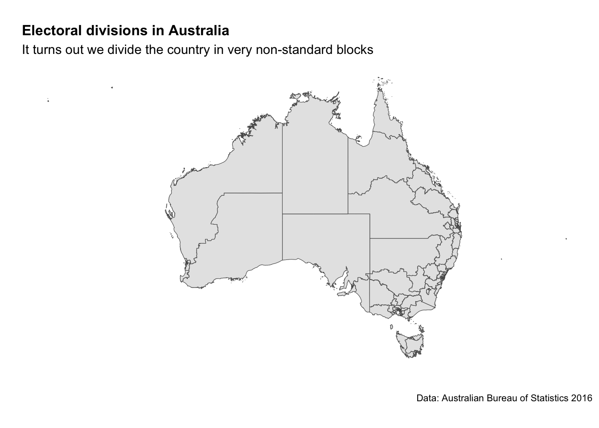
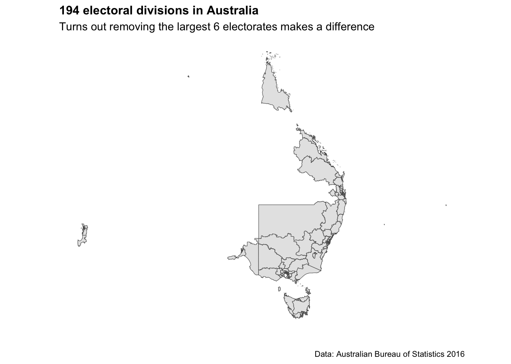
Next let’s look at what party/candidate is currently the sitting member for each electorate. To do this on a map we’re going to need to join our tcp22 data and the ced2021 spatial data.
In the first data set, the electorate column in called ‘DivisionNm’ and in the second ‘ced_name_2021’.
We see the data in our DivisionNm variable is in UPPERCASE while our ced_name_2021 variable is in Titlecase. Let’s change the first variable to Titlecase to match.
We can then then join the two dataframes using the left_join function.
# Pull in the electorate shapefiles via strayr
electorates <- strayr::read_absmap("ced2021")
# Make the DivisionNm Titlecase
tcp22$DivisionNm <- str_to_title(tcp22$DivisionNm)
tcp22_edit <- tcp22 %>%
distinct() %>%
filter(Elected == "Y")
# Make the column names the same
electorates <- dplyr::rename(electorates, DivisionNm = ced_name_2021)
ced_map_data <- left_join(tcp22_edit, electorates, by = "DivisionNm")
ced_map_data <- as.data.frame(ced_map_data)
head(ced_map_data, n = 151)Analysis
Let’s start by answering a simple question: who won the election? For this we’ll need to use the two-candidate preferred data set (to make sure we capture all the minor parties that won seats).
Note in the table above, the PartyNm variable is a mess. Some candidates noted their party by it’s abbreviation rather than full name, others put in a state specific prefix For this analysis, the PartyAb variable is cleaner to use.
who_won <- tcp22 %>%
filter(Elected == "Y") %>%
group_by(PartyAb) %>%
tally() %>%
arrange(desc(n))
head(who_won, n = 10)# A tibble: 7 × 2
PartyAb n
<chr> <int>
1 ALP 77
2 LP 48
3 IND 10
4 NP 10
5 GRN 4
6 KAP 1
7 XEN 1Next up let’s see which candidates won with the smallest percentage of first preference votes. Australia’s preferential voting system normally makes these numbers quite interesting.
who_won_least_votes_prop <- fp22 %>%
filter(Elected == "Y") %>%
arrange(Percent) %>%
mutate(candidate_full_name = paste0(GivenNm, " ", Surname, " (", CandidateID, ")")) %>%
dplyr::select(candidate_full_name, PartyNm, DivisionNm, Percent)
head(who_won_least_votes_prop, n = 10)# A tibble: 10 × 4
candidate_full_name PartyNm DivisionNm Percent
<chr> <chr> <chr> <dbl>
1 KYLEA JANE TINK (37452) INDEPENDENT NORTH SYDNEY 25.2
2 SAM BIRRELL (36061) NATIONAL PARTY NICHOLLS 26.1
3 STEPHEN BATES (37338) QUEENSLAND GREENS BRISBANE 27.2
4 MICHELLE ANANDA-RAJAH (36433) AUSTRALIAN LABOR PARTY HIGGINS 28.5
5 JUSTINE ELLIOT (36802) AUSTRALIAN LABOR PARTY RICHMOND 28.8
6 BRIAN MITCHELL (37276) AUSTRALIAN LABOR PARTY LYONS 29.0
7 KATE CHANEY (36589) INDEPENDENT CURTIN 29.5
8 DAI LE (36240) INDEPENDENT FOWLER 29.5
9 ELIZABETH WATSON-BROWN (37370) QUEENSLAND GREENS RYAN 30.2
10 REBEKHA SHARKIE (37710) CENTRE ALLIANCE MAYO 31.4This is really something.
The relationship we’re seeing here seems to be these are many the seats that are won with barely 30% of the first preference vote.
The electorate I grew up in is listed here (Richmond) - let’s look at how the votes were allocated.
Richmond_fp <- fp22 %>%
filter(DivisionNm == "RICHMOND") %>%
arrange(-Percent) %>%
mutate(candidate_full_name = paste0(GivenNm, " ", Surname, " (", CandidateID, ")")) %>%
dplyr::select(candidate_full_name, PartyNm, DivisionNm, Percent, OrdinaryVotes)
head(Richmond_fp, n = 10)# A tibble: 10 × 5
candidate_full_name PartyNm DivisionNm Percent OrdinaryVotes
<chr> <chr> <chr> <dbl> <dbl>
1 JUSTINE ELLIOT (36802) AUSTRALIAN L… RICHMOND 28.8 28733
2 MANDY NOLAN (36361) THE GREENS RICHMOND 25.3 25216
3 KIMBERLY HONE (36351) NATIONAL PAR… RICHMOND 23.4 23299
4 GARY BIGGS (36648) LIBERAL DEMO… RICHMOND 7.7 7681
5 TRACEY BELL-HENSELIN (37831) ONE NATION RICHMOND 4.08 4073
6 ROBERT JAMES MARKS (37084) UNITED AUSTR… RICHMOND 2.93 2922
7 DAVID WARTH (37813) INDEPENDENT RICHMOND 2.35 2341
8 MONICA SHEPHERD (36408) INFORMED MED… RICHMOND 2.28 2271
9 NATHAN JONES (37721) INDEPENDENT RICHMOND 1.98 1974
10 TERRY PATRICK SHARPLES (37823) INDEPENDENT RICHMOND 1.28 1274Sure enough - the Greens certainly helped get the ALP across the line.
The interpretation that these seats are the ‘most marginal’ is incorrect under a preferential voting system (e.g. imagine if ALP win 30% and the Greens win 30% - that is a pretty safe 10% margin assuming traditional preference flows).
But - let’s investigate which seats are the most marginal.
who_won_smallest_margin <- tcp22 %>%
filter(Elected == "Y") %>%
mutate(percent_margin = 2 * (Percent - 50), vote_margin = round(percent_margin * OrdinaryVotes / Percent)) %>%
arrange(Percent) %>%
mutate(candidate_full_name = paste0(GivenNm, " ", Surname, " (", CandidateID, ")")) %>%
dplyr::select(candidate_full_name, PartyNm, DivisionNm, Percent, OrdinaryVotes, percent_margin, vote_margin)
head(who_won_smallest_margin, n = 20)# A tibble: 20 × 7
candidate_full_name PartyNm DivisionNm Percent OrdinaryVotes percent_margin
<chr> <chr> <chr> <dbl> <dbl> <dbl>
1 FIONA PHILLIPS (3677… AUSTRA… Gilmore 50.2 56039 0.340
2 MICHAEL SUKKAR (3671… LIBERA… Deakin 50.2 50322 0.380
3 JAMES STEVENS (37067) LIBERA… Sturt 50.4 56813 0.900
4 IAN GOODENOUGH (3659… LIBERA… Moore 50.7 52958 1.32
5 KEITH WOLAHAN (36733) LIBERA… Menzies 50.7 51198 1.36
6 BRIAN MITCHELL (3727… AUSTRA… Lyons 50.9 37341 1.84
7 MARION SCRYMGOUR (37… A.L.P. Lingiari 51.0 23339 1.90
8 JEROME LAXALE (36827) AUSTRA… Bennelong 51.0 50801 1.96
9 KATE CHANEY (36589) INDEPE… Curtin 51.3 53847 2.52
10 BRIDGET KATHLEEN ARC… LIBERA… Bass 51.4 35288 2.86
11 AARON VIOLI (36711) LIBERA… Casey 51.5 51283 2.96
12 DAI LE (36240) INDEPE… Fowler 51.6 44348 3.26
13 PETER DUTTON (37493) LIBERA… Dickson 51.7 51196 3.40
14 MICHELLE ANANDA-RAJA… AUSTRA… Higgins 52.1 49726 4.12
15 GORDON REID (36801) AUSTRA… Robertson 52.3 50277 4.52
16 PAT CONAGHAN (36342) NATION… Cowper 52.3 58204 4.64
17 SAM LIM (37337) AUSTRA… Tangney 52.4 56331 4.76
18 SOPHIE SCAMPS (37450) INDEPE… Mackellar 52.5 51973 5
19 ELIZABETH WATSON-BRO… QUEENS… Ryan 52.6 52286 5.3
20 ALAN TUDGE (36704) LIBERA… Aston 52.8 51840 5.62
# ℹ 1 more variable: vote_margin <dbl>Crikey. We see Fiona Phillips in Gilmore got in with a 0.17% margin (just 380 votes!)
While we’re at it, we better do the opposite and see who romped it in by the largest margin.
who_won_largest_margin <- tcp22 %>%
filter(Elected == "Y") %>%
mutate(percent_margin = 2 * (Percent - 50), vote_margin = round(percent_margin * OrdinaryVotes / Percent)) %>%
arrange(desc(Percent)) %>%
mutate(candidate_full_name = paste0(GivenNm, " ", Surname, " (", CandidateID, ")")) %>%
dplyr::select(candidate_full_name, PartyNm, DivisionNm, Percent, OrdinaryVotes, percent_margin, vote_margin)
head(who_won_largest_margin, n = 20)# A tibble: 20 × 7
candidate_full_name PartyNm DivisionNm Percent OrdinaryVotes percent_margin
<chr> <chr> <chr> <dbl> <dbl> <dbl>
1 DAVID LITTLEPROUD (3… LIBERA… Maranoa 72.1 67153 44.2
2 ANDREW WILKIE (33553) INDEPE… Clark 70.8 46668 41.6
3 DARREN CHESTER (3604… NATION… Gippsland 70.6 71205 41.1
4 ANNE WEBSTER (36060) NATION… Mallee 69.0 70523 38.0
5 SHARON CLAYDON (3680… AUSTRA… Newcastle 68.0 71807 36.0
6 MARK COULTON (36363) NATION… Parkes 67.8 60433 35.7
7 ANTHONY ALBANESE (36… AUSTRA… Grayndler 67.0 63413 34.1
8 JOSH WILSON (37314) AUSTRA… Fremantle 66.9 65585 33.8
9 MADELEINE KING (3718… AUSTRA… Brand 66.7 63829 33.4
10 TANYA PLIBERSEK (368… AUSTRA… Sydney 66.7 68770 33.4
11 TONY PASIN (37083) LIBERA… Barker 66.6 70483 33.2
12 DANIEL MULINO (36385) AUSTRA… Fraser 66.5 61251 33
13 BARNABY JOYCE (36335) NATION… New Engla… 66.4 64622 32.9
14 SUSSAN LEY (37032) LIBERA… Farrer 66.4 66739 32.7
15 AMANDA RISHWORTH (36… AUSTRA… Kingston 66.4 72564 32.7
16 ANDREW LEIGH (36234) AUSTRA… Fenner 65.7 59966 31.4
17 ANDREW GILES (36447) AUSTRA… Scullin 65.6 59761 31.2
18 LINDA BURNEY (36820) AUSTRA… Barton 65.5 60054 31.1
19 MATT KEOGH (37195) AUSTRA… Burt 65.2 59704 30.4
20 TONY BURKE (36809) AUSTRA… Watson 65.1 55810 30.2
# ℹ 1 more variable: vote_margin <dbl>Wowza. That’s really something. Some candidates won seats with a 40-45 percent margin - scooping up 70% of the two candidate preferred vote in the process!
We can also cut the seats by state for a look at where the ‘strongholds’ are across the country.
who_won <- tcp22 %>%
filter(Elected == "Y") %>%
group_by(PartyAb, StateAb) %>%
tally() %>%
arrange(desc(n))
who_won_by_state <- spread(who_won, StateAb, n) %>% arrange(desc(NSW))
head(who_won_by_state, n = 10)Trends
Now we’ve figured out how to work with election data - let’s link it up to some AUstralian demographic data. The eechidna package includes a cleaned set of census data from 2022 that has already been adjusted from ASGS boundaries to Commonwealth Electoral Divisions.
# Import the census data from the eechidna package
data(eechidna::abs2021)
head(abs2021)
# Join with two-party preferred voting data
data(tpp10)
election2022 <- left_join(abs2021, tpp10, by = "DivisionNm")That’s what we want to see. 151 rows of data (one for each electorate) and over 80 columns of census variables.
A starting exploratory exercise is too see which of these variables are correlated with voting for one party or another. There’s some old narrative around LNP voters being rich, old, white, and somehow ‘upper class’ compared to the population at large. Let’s pick a few variables that roughly match with this criteria (Income, Age, English language speakers, and Bachelor educated) and chart it compared to LNP percentage of the vote.
# See relationship between personal income and Liberal/National support
ggplot(election2022, aes(x = MedianPersonalIncome, y = LNP_Percent)) +
geom_point() +
geom_smooth() +
theme_minimal()
ggplot(election2022, aes(x = MedianAge, y = LNP_Percent)) +
geom_jitter() +
geom_smooth() +
theme_minimal()
ggplot(election2022, aes(x = EnglishOnly, y = LNP_Percent)) +
geom_jitter() +
geom_smooth() +
theme_minimal()
ggplot(election2022, aes(x = BachelorAbv, y = LNP_Percent)) +
geom_jitter() +
geom_smooth() +
theme_minimal()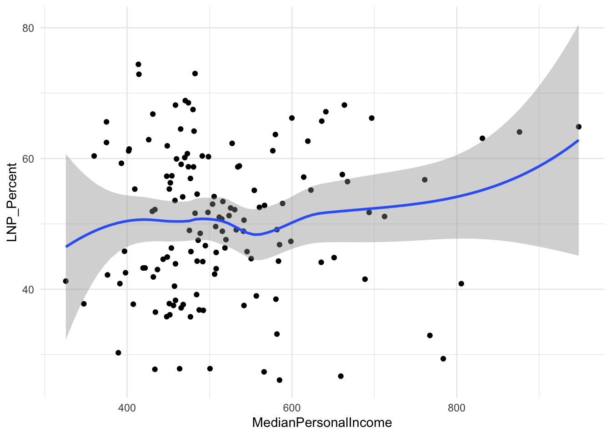
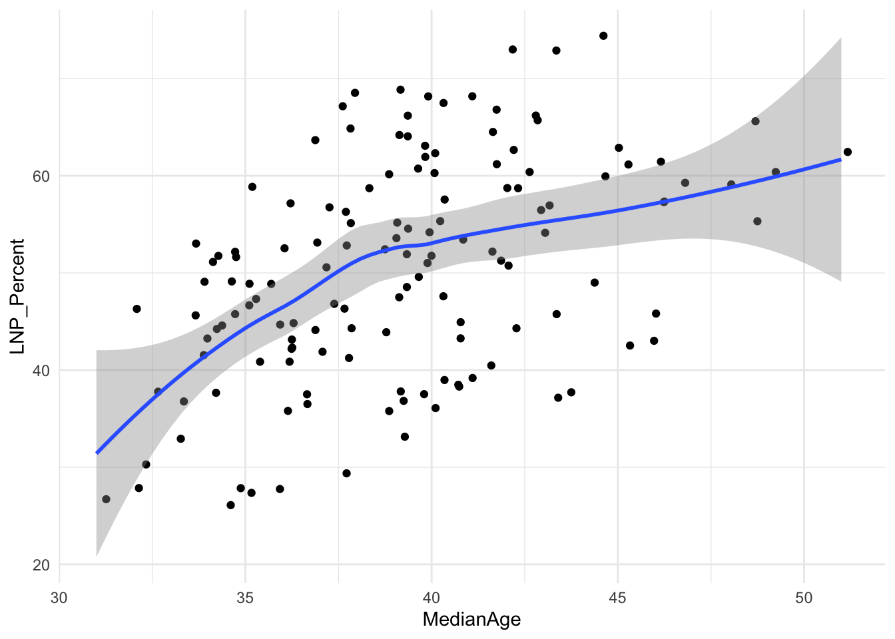
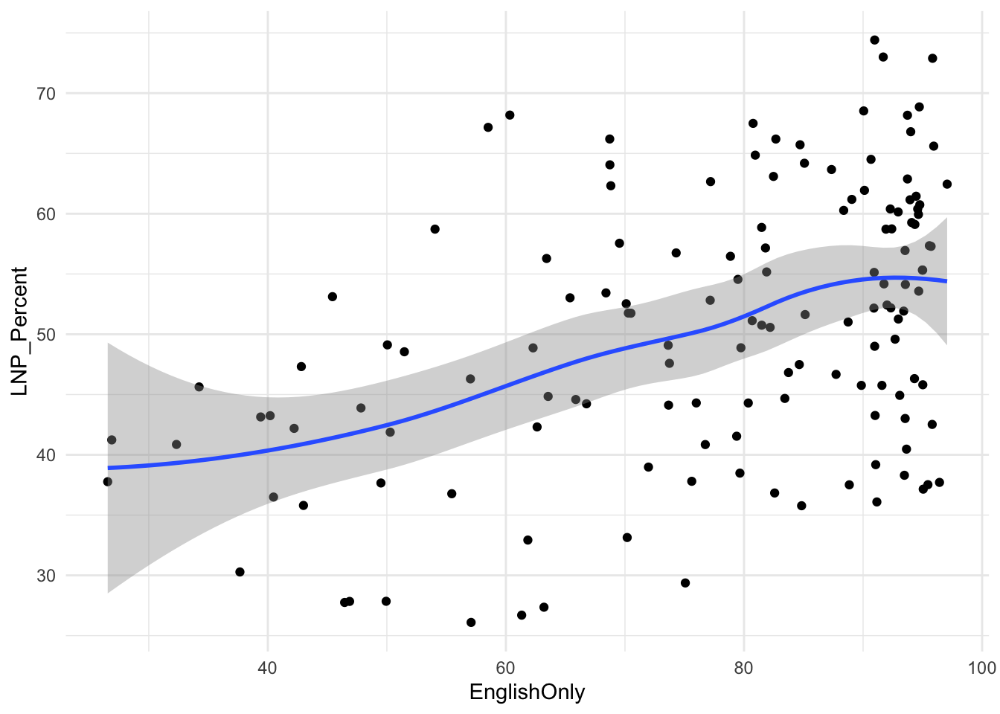
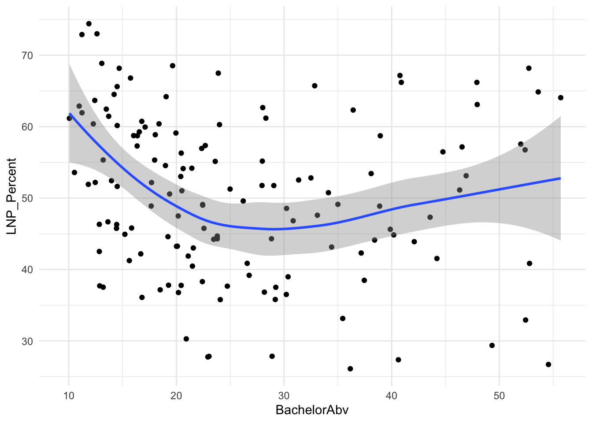
First impressions: Geez this data looks messy.
Second impression: Maybe there’s a bit of a trend with age and income?
Let’s build a regression model to run all the 80 odd census variables in the abs2022 data set against the LNP_percent variable.
# We can use colnames(election2022) to get a big list of all the variables available
# Now we build the model
election_model <- lm(
LNP_Percent ~
Population +
Area +
Age00_04 +
Age05_14 +
Age15_19 +
Age20_24 +
Age25_34 +
Age35_44 +
Age45_54 +
Age55_64 +
Age65_74 +
Age75_84 +
Age85plus +
Anglican +
AusCitizen +
AverageHouseholdSize +
BachelorAbv + Born_Asia +
Born_MidEast + Born_SE_Europe +
Born_UK +
BornElsewhere +
Buddhism +
Catholic +
Christianity +
Couple_NoChild_House + Couple_WChild_House +
CurrentlyStudying + DeFacto +
DiffAddress +
DipCert +
EnglishOnly +
FamilyRatio +
Finance +
HighSchool +
Indigenous +
InternetUse +
Islam +
Judaism +
Laborer +
LFParticipation +
Married +
MedianAge +
MedianFamilyIncome +
MedianHouseholdIncome +
MedianLoanPay +
MedianPersonalIncome +
MedianRent +
Mortgage +
NoReligion +
OneParent_House +
Owned +
Professional +
PublicHousing +
Renting +
SocialServ +
SP_House +
Tradesperson +
Unemployed +
Volunteer,
data = election2022
)
summary(election_model)
Call:
lm(formula = LNP_Percent ~ Population + Area + Age00_04 + Age05_14 +
Age15_19 + Age20_24 + Age25_34 + Age35_44 + Age45_54 + Age55_64 +
Age65_74 + Age75_84 + Age85plus + Anglican + AusCitizen +
AverageHouseholdSize + BachelorAbv + Born_Asia + Born_MidEast +
Born_SE_Europe + Born_UK + BornElsewhere + Buddhism + Catholic +
Christianity + Couple_NoChild_House + Couple_WChild_House +
CurrentlyStudying + DeFacto + DiffAddress + DipCert + EnglishOnly +
FamilyRatio + Finance + HighSchool + Indigenous + InternetUse +
Islam + Judaism + Laborer + LFParticipation + Married + MedianAge +
MedianFamilyIncome + MedianHouseholdIncome + MedianLoanPay +
MedianPersonalIncome + MedianRent + Mortgage + NoReligion +
OneParent_House + Owned + Professional + PublicHousing +
Renting + SocialServ + SP_House + Tradesperson + Unemployed +
Volunteer, data = election2022)
Residuals:
Min 1Q Median 3Q Max
-11.9358 -2.0714 -0.1947 2.1152 8.1823
Coefficients: (1 not defined because of singularities)
Estimate Std. Error t value Pr(>|t|)
(Intercept) 2.973e+04 1.408e+04 2.111 0.037912 *
Population 8.911e-05 4.885e-05 1.824 0.071865 .
Area 7.945e-06 5.069e-06 1.567 0.120957
Age00_04 -2.830e+02 1.402e+02 -2.018 0.046910 *
Age05_14 -2.923e+02 1.403e+02 -2.084 0.040367 *
Age15_19 -2.793e+02 1.401e+02 -1.993 0.049677 *
Age20_24 -2.989e+02 1.402e+02 -2.132 0.036042 *
Age25_34 -2.921e+02 1.404e+02 -2.080 0.040715 *
Age35_44 -2.942e+02 1.401e+02 -2.100 0.038900 *
Age45_54 -2.921e+02 1.404e+02 -2.080 0.040689 *
Age55_64 -2.903e+02 1.400e+02 -2.073 0.041402 *
Age65_74 -2.888e+02 1.401e+02 -2.062 0.042477 *
Age75_84 -2.844e+02 1.404e+02 -2.025 0.046152 *
Age85plus -3.014e+02 1.398e+02 -2.156 0.034123 *
Anglican 8.452e-01 4.518e-01 1.871 0.065057 .
AusCitizen 4.673e-01 7.032e-01 0.664 0.508282
AverageHouseholdSize -2.556e+01 1.684e+01 -1.518 0.133076
BachelorAbv -3.068e+00 8.049e-01 -3.812 0.000270 ***
Born_Asia 3.963e-01 3.771e-01 1.051 0.296516
Born_MidEast 1.091e+00 1.029e+00 1.060 0.292396
Born_SE_Europe -1.628e+00 2.119e+00 -0.768 0.444585
Born_UK 1.487e-01 4.886e-01 0.304 0.761591
BornElsewhere 7.110e-01 5.618e-01 1.266 0.209346
Buddhism -1.097e+00 7.070e-01 -1.551 0.124835
Catholic -6.257e-01 4.202e-01 -1.489 0.140356
Christianity 5.736e-01 5.095e-01 1.126 0.263605
Couple_NoChild_House -1.581e+00 3.747e+00 -0.422 0.674192
Couple_WChild_House -3.264e-01 4.061e+00 -0.080 0.936150
CurrentlyStudying -4.117e-01 1.241e+00 -0.332 0.740988
DeFacto -6.600e+00 1.931e+00 -3.417 0.000997 ***
DiffAddress 9.427e-01 3.174e-01 2.970 0.003935 **
DipCert -9.857e-01 6.871e-01 -1.435 0.155319
EnglishOnly -3.977e-01 4.103e-01 -0.969 0.335365
FamilyRatio -2.873e+01 4.547e+01 -0.632 0.529296
Finance 1.399e+00 8.717e-01 1.605 0.112372
HighSchool 7.160e-01 4.161e-01 1.721 0.089173 .
Indigenous 3.919e-01 4.572e-01 0.857 0.393876
InternetUse NA NA NA NA
Islam -4.161e-01 5.624e-01 -0.740 0.461601
Judaism 4.377e-01 6.511e-01 0.672 0.503385
Laborer -8.258e-01 7.283e-01 -1.134 0.260251
LFParticipation 6.822e-01 6.359e-01 1.073 0.286562
Married -5.852e+00 1.734e+00 -3.375 0.001141 **
MedianAge -9.926e-01 1.036e+00 -0.958 0.340782
MedianFamilyIncome -3.456e-02 2.524e-02 -1.369 0.174711
MedianHouseholdIncome 6.410e-02 2.756e-02 2.326 0.022568 *
MedianLoanPay -1.889e-02 1.143e-02 -1.653 0.102290
MedianPersonalIncome 2.957e-02 5.171e-02 0.572 0.569043
MedianRent 6.781e-03 5.786e-02 0.117 0.906997
Mortgage 2.021e-02 1.406e+00 0.014 0.988568
NoReligion 6.649e-01 4.779e-01 1.391 0.167983
OneParent_House -6.243e+00 3.876e+00 -1.611 0.111150
Owned 1.168e-02 1.334e+00 0.009 0.993036
Professional 1.314e+00 8.840e-01 1.487 0.141064
PublicHousing -8.154e-01 5.754e-01 -1.417 0.160350
Renting -2.602e-02 1.463e+00 -0.018 0.985859
SocialServ -5.254e-02 4.674e-01 -0.112 0.910776
SP_House -2.021e-01 8.735e-01 -0.231 0.817658
Tradesperson -1.299e-01 7.929e-01 -0.164 0.870301
Unemployed -4.229e+00 1.503e+00 -2.814 0.006160 **
Volunteer 4.773e-01 6.417e-01 0.744 0.459120
---
Signif. codes: 0 '***' 0.001 '**' 0.01 '*' 0.05 '.' 0.1 ' ' 1
Residual standard error: 4.729 on 80 degrees of freedom
(11 observations deleted due to missingness)
Multiple R-squared: 0.8975, Adjusted R-squared: 0.822
F-statistic: 11.88 on 59 and 80 DF, p-value: < 2.2e-16For the people that care about statistical fit and endogenous variables, you may have concerns (and rightly so) with the above approach.
It’s pretty rough. Let’s run a basic check to see if the residuals are normally distributed.
hist(election_model$residuals, col = "bisque", freq = FALSE, main = NA)
lines(density(election_model$residuals), col = "red")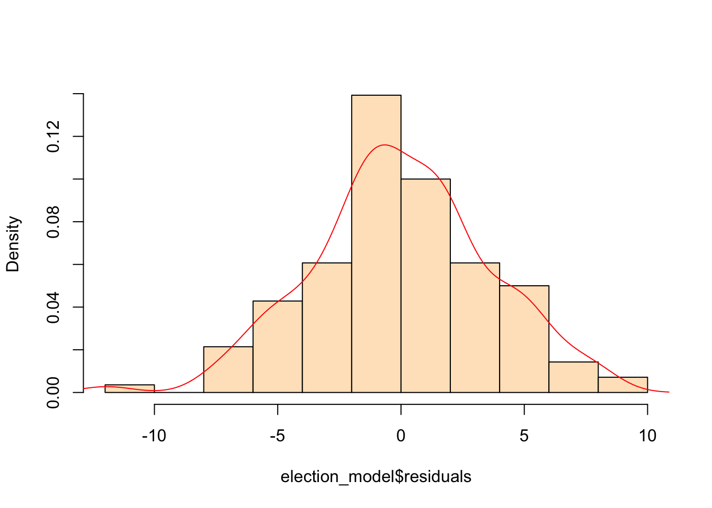
Hmm… that’s actually not too bad. Onwards.
We see now that only a handful of these variables in the table above are statistically significant. Running an updated (and leaner) model gives:
election_model_lean <- lm(
LNP_Percent ~
BachelorAbv +
CurrentlyStudying +
DeFacto +
DiffAddress +
Finance + HighSchool +
Indigenous +
LFParticipation +
Married +
NoReligion,
data = election2022
)
summary(election_model_lean)ggplot(election2022, aes(x = BachelorAbv, y = LNP_Percent)) +
geom_point() +
geom_smooth() +
theme_minimal()
ggplot(election2022, aes(x = CurrentlyStudying, y = LNP_Percent)) +
geom_jitter() +
geom_smooth() +
theme_minimal()
ggplot(election2022, aes(x = DeFacto, y = LNP_Percent)) +
geom_jitter() +
geom_smooth() +
theme_minimal()
ggplot(election2022, aes(x = DiffAddress, y = LNP_Percent)) +
geom_jitter() +
geom_smooth() +
theme_minimal()
ggplot(election2022, aes(x = Finance, y = LNP_Percent)) +
geom_jitter() +
geom_smooth() +
theme_minimal()
ggplot(election2022, aes(x = HighSchool, y = LNP_Percent)) +
geom_jitter() +
geom_smooth() +
theme_minimal()
ggplot(election2022, aes(x = Indigenous, y = LNP_Percent)) +
geom_jitter() +
geom_smooth() +
theme_minimal()
ggplot(election2022, aes(x = LFParticipation, y = LNP_Percent)) +
geom_jitter() +
geom_smooth() +
theme_minimal()
ggplot(election2022, aes(x = Married, y = LNP_Percent)) +
geom_jitter() +
geom_smooth() +
theme_minimal()
ggplot(election2022, aes(x = NoReligion, y = LNP_Percent)) +
geom_jitter() +
geom_smooth() +
theme_minimal()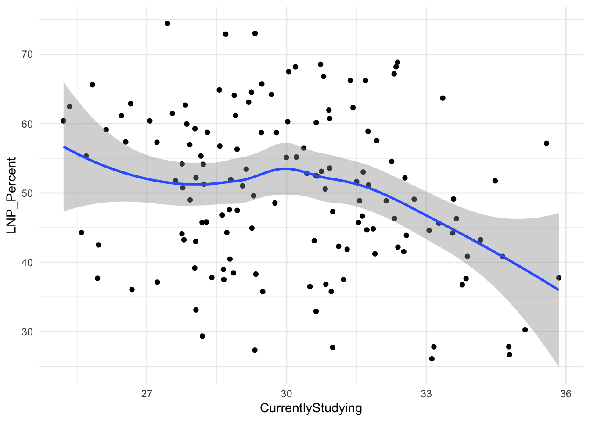
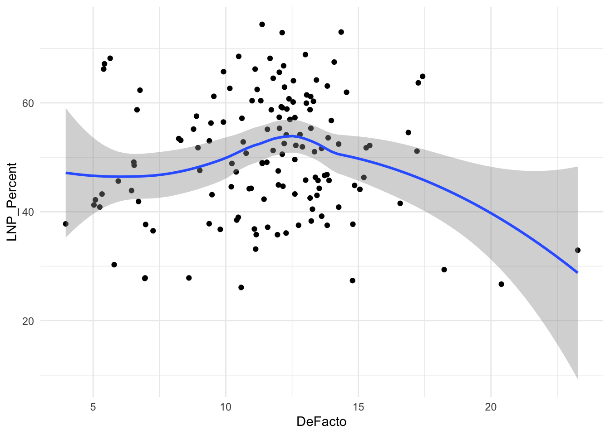
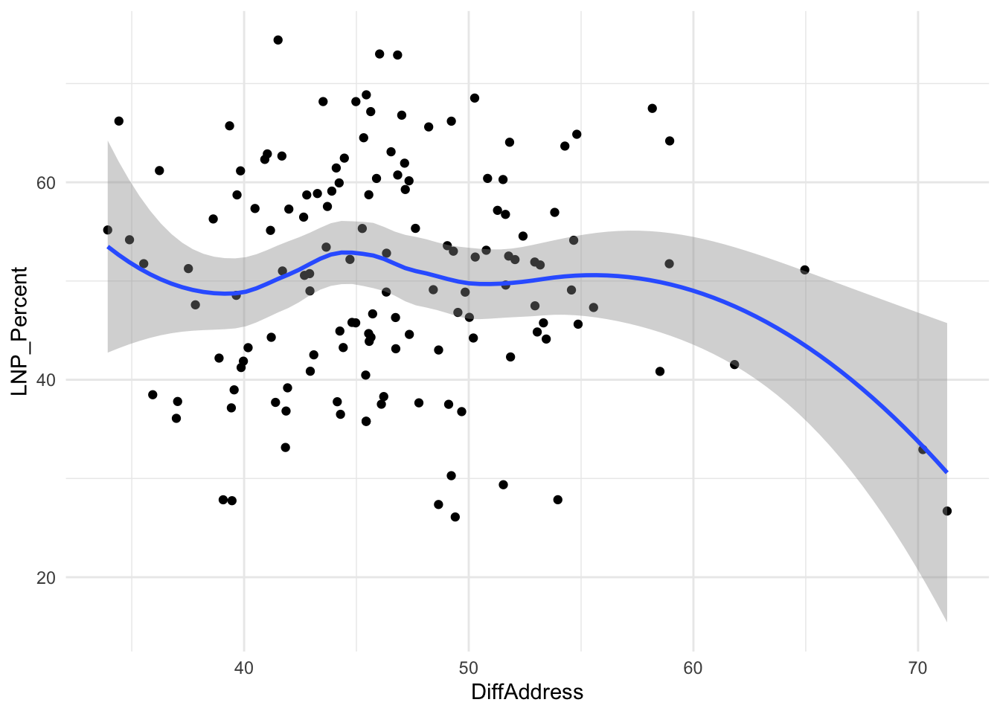
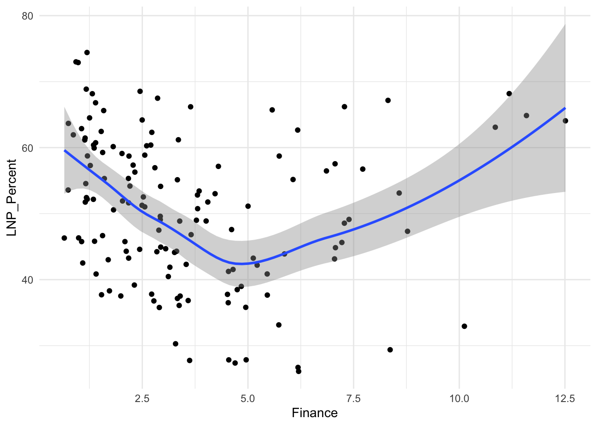
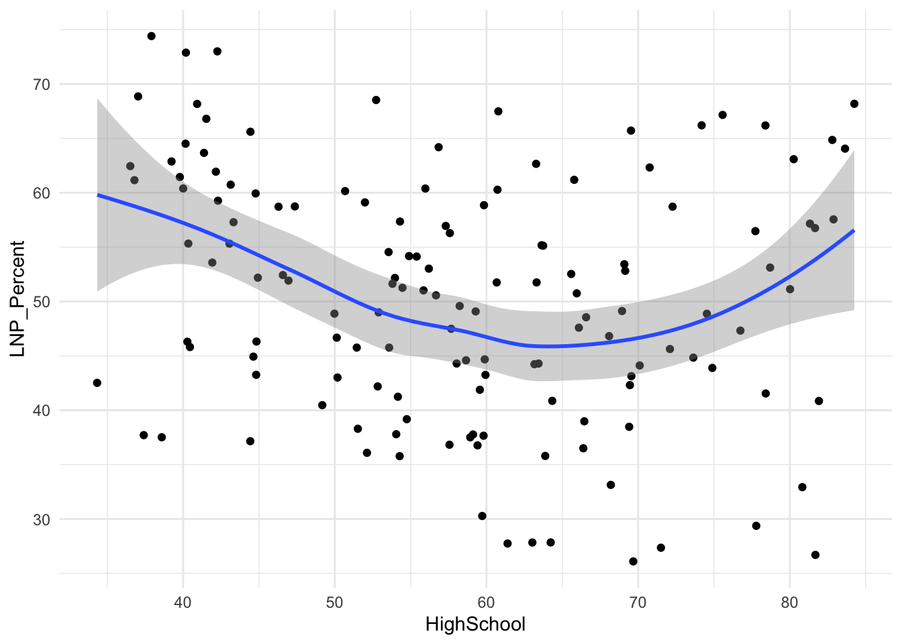
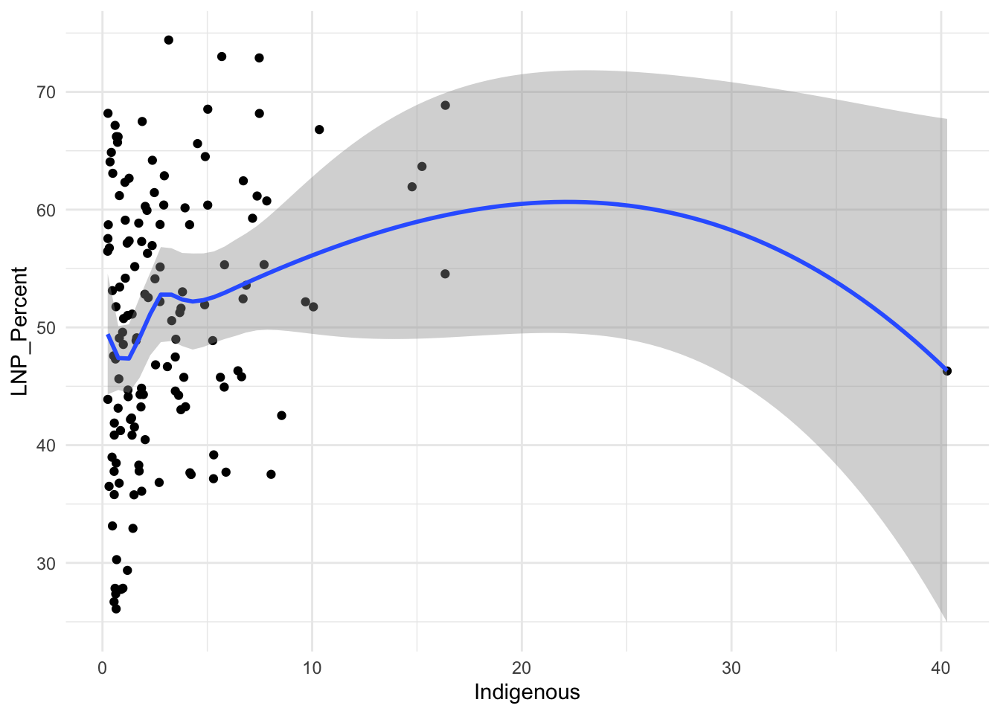
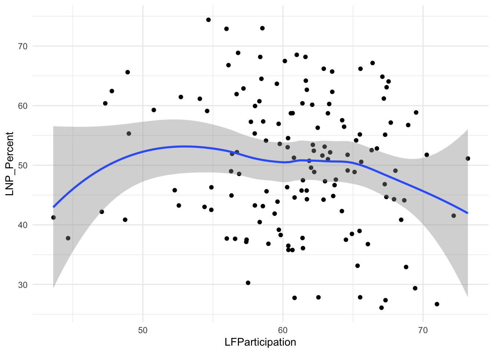
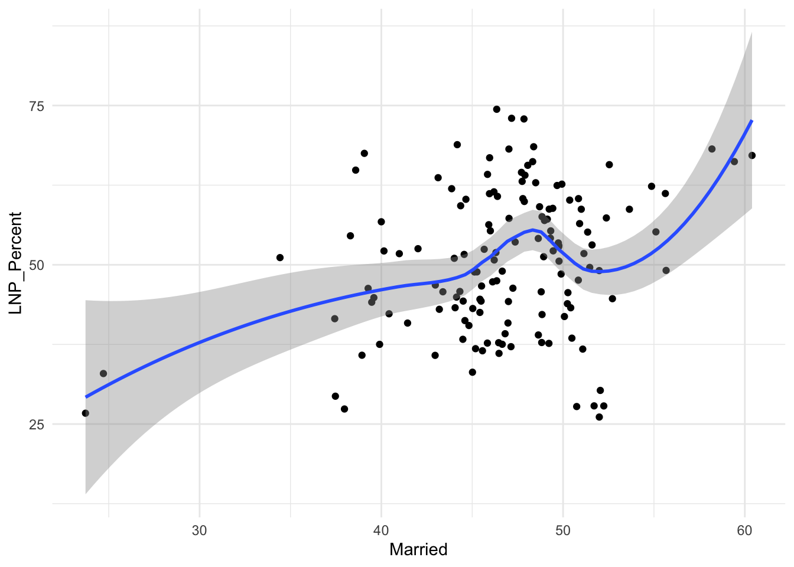
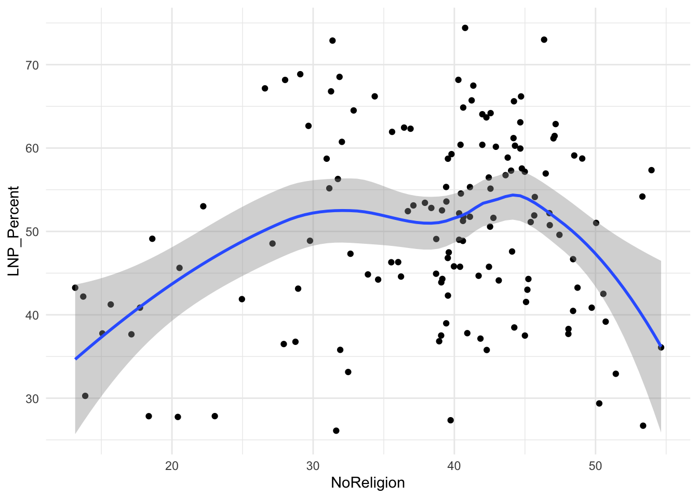
One of the more novel issues with the above analysis is that it’s done on the electorate level, however electorates vary dramatically in side (google the Modifiable Area Unit Problem if this piques your interest)
Instead of using one data point for a whole electorate (regardless of how big it is), we can fetch data from all 7,000 voting booths, the match it up with the corresponding local demographic data.
Booth data
The AEC maintains a handy spreadsheet of booth locations for recent federal elections. You can search for your local booth location (probably a school, church, or community center) in the table below.
# A tibble: 10 × 15
State DivisionID DivisionNm PollingPlaceID PollingPlaceTypeID PollingPlaceNm
<chr> <dbl> <chr> <dbl> <dbl> <chr>
1 ACT 101 Canberra 8829 1 Barton
2 ACT 101 Canberra 64583 5 Belconnen CANB…
3 ACT 101 Canberra 65504 5 BLV Canberra P…
4 ACT 101 Canberra 11877 1 Bonython
5 ACT 101 Canberra 8802 1 Braddon (Canbe…
6 ACT 101 Canberra 11452 1 Calwell
7 ACT 101 Canberra 8806 1 Campbell
8 ACT 101 Canberra 8761 1 Chapman
9 ACT 101 Canberra 8763 1 Chisholm
10 ACT 101 Canberra 8808 1 City (Canberra)
# ℹ 9 more variables: PremisesNm <chr>, PremisesAddress1 <chr>,
# PremisesAddress2 <chr>, PremisesAddress3 <chr>, PremisesSuburb <chr>,
# PremisesStateAb <chr>, PremisesPostCode <chr>, Latitude <dbl>,
# Longitude <dbl>What do these booths look like on a map? Let’s reuse the CED map above and plot a point for each booth location.
ggplot() +
geom_sf(data = ced2021) +
geom_point(
data = booths, aes(x = Longitude, y = Latitude),
colour = "purple", size = 1, alpha = 0.3, inherit.aes = FALSE
) +
labs(
title = "Polling booths in Australia",
subtitle = " ",
caption = "Data: Australian Electoral Commission 2016",
x = "",
y = ""
) +
theme_minimal() +
theme(
axis.ticks.x = element_blank(),
axis.text.x = element_blank(),
axis.ticks.y = element_blank(),
axis.text.y = element_blank(),
panel.grid.major = element_blank(),
panel.grid.minor = element_blank(),
legend.position = "right",
plot.title = element_text(size = 12),
plot.subtitle = element_text(size = 11),
plot.caption = element_text(size = 8)
) +
xlim(c(112, 157)) +
ylim(c(-44, -11))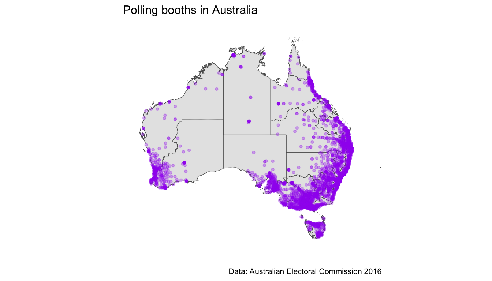
Figuring out where a candidates votes come from within an electorate is fundamental to developing a campaign strategy. Even in small electorates (e.g. Wentworth), there are pockets of right leaning and left leaning districts. Once you factor in preference flows, this multi-variate calculus becomes important to winning or maintaining a seat.
In the eechidnapackage, election results are provided at the resolution of polling place. Unfortunately, these are yet to be updated for elections after 2016.
The data sets must be downloaded using the functions firstpref_pollingbooth_download, twoparty_pollingbooth_download or twocand_pollingbooth_download (depending on the vote type).
The two files need to be merged to be useful for analysis. Both have a unique ID for the polling place that can be used to match the records. The two party preferred vote, a measure of preference between only the Australian Labor Party (ALP) and the Liberal/National Coalition (LNP), is downloaded using twoparty_pollingbooth_download. The preferred party is the one with the higher percentage, and we use this to colour the points indicating polling places.
We see that within some big rural electorates (e.g. in Western NSW), there are pockets of ALP preference despite the seat going to the LNP. Note that this data set is on a tpp basis - so we can’t see the booths that were won by minor parties (although it would be fascinating).We see that within some big rural electorates (e.g. in Western NSW), there are pockets of ALP preference despite the seat going to the LNP. Note that this data set is on a tpp basis - so we can’t see the booths that were won by minor parties (although it would be fascinating).
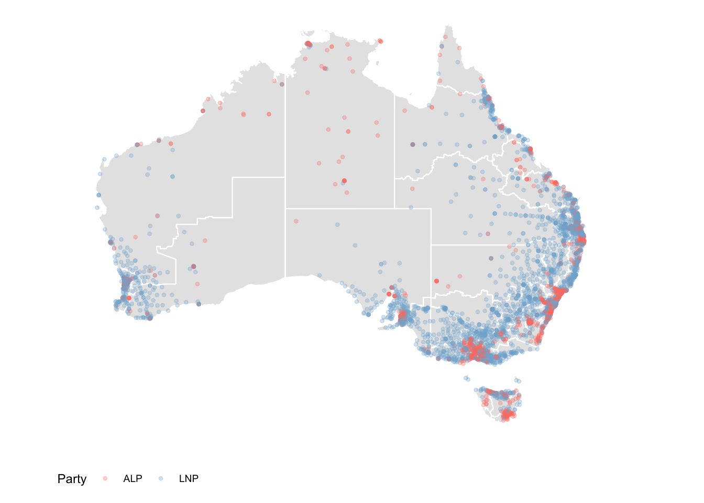
The two candidate preferred vote (downloaded with twocand_pollingbooth_download) is a measure of preference between the two candidates who received the most votes through the division of preferences, where the winner has the higher percentage.
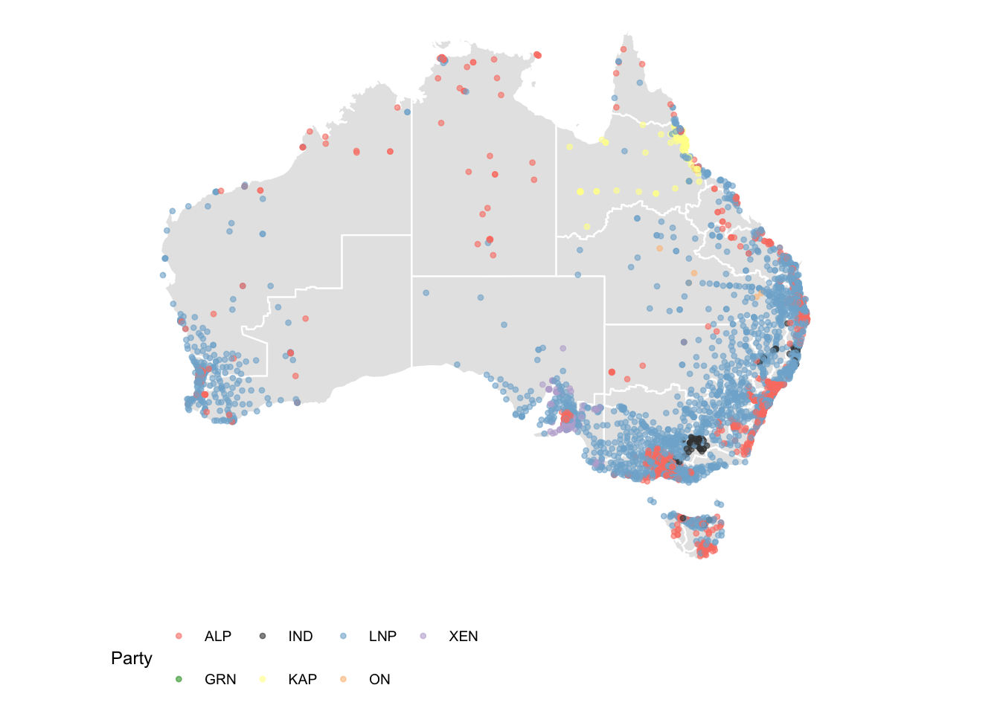
Informal votes
Over 700,000 people (around 5% of all votes cast) vote informally each election. Of these, over have ‘no clear first preference’, meaning their vote did not contribute to the campaign of any candidate.
I’ll be honest, informal votes absolutely fascinate me. Not only are there 8 types of informal votes (you can read all about the Australian Electoral Commission’s analysis here), but the rate of informal voting varies a tremendous amount by electorate.
Broadly, we can think of informal votes in two main buckets.
Protest votes
Stuff-ups
If we want to get particular about it, I like to subcategorise these buckets into:
Protest votes (i.e. a person that thinks they are voting against):
the democratic system,
their local selection of candidates on the ballot, or
the two most likely candidates for PM.
Stuff ups (people who):
filled in the form wrong but a clear preference was still made
stuffed up the form entirely and it didn’t contribute towards the tally for any candidtate
The AEC works tirelessly to reduce stuff-ups on ballot papers (clear instructions and UI etc), but there isn’t much of a solution for protest votes.